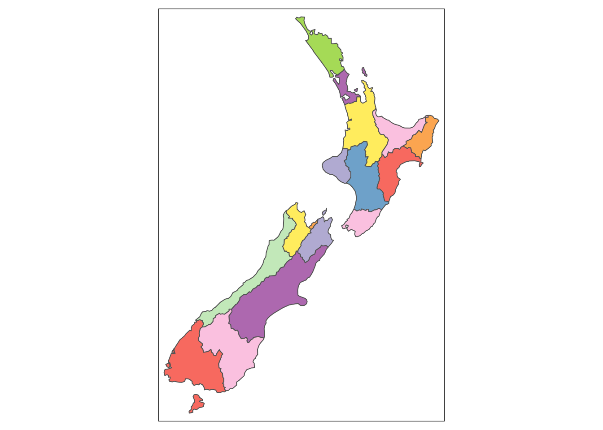
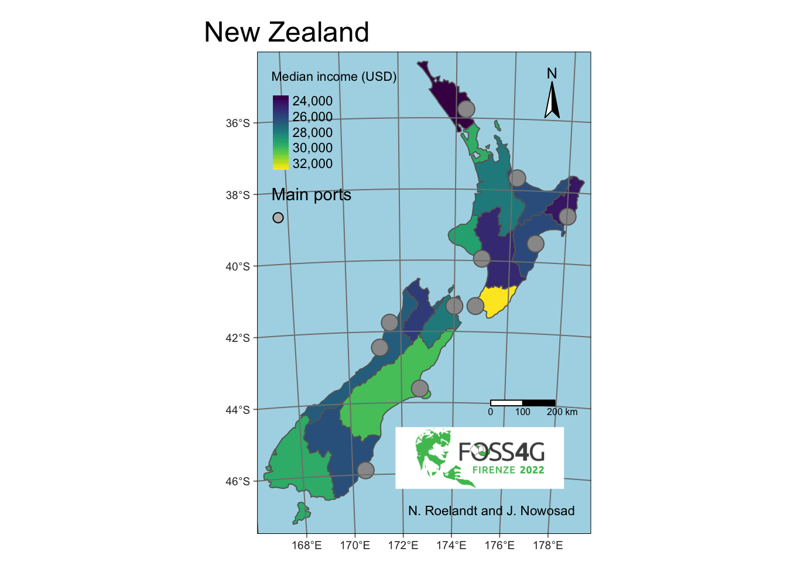

Chapter 3 Making maps in R
This chapter requires the following packages:
Additionally, we will use three datasets:
nz: a set of polygons representing 16 regions of New Zealandnz_ports: a point dataset with locations of New Zealand main portsnz_elev: an elevation raster data of the New Zealand area
##
## Attaching package: 'spData'## The following object is masked _by_ '.GlobalEnv':
##
## worlddata("nz")
nz_ports <- read_sf("data/nz_ports.gpkg")
nz_elev <- rast(system.file("raster/nz_elev.tif", package = "spDataLarge"))3.1 Mapping tools in R
R has many packages dedicated to spatial data visualizations. They include tools for making both static maps, interactive maps, specific-purpose maps, animations, etc.
Packages for creating static maps include {graphics}, {rasterVis}, {ggplot2}, {ggspatial}, {mapsf}, {**}tidyterra}, etc. Interactive maps’ packages are, for example, {leaflet}, {mapview}, {mapdeck}. Specific-purpose mapping can be achieved with {cartogram} (to construct area cartograms), {geofacet} (“geofaceting”), {geogrid} (to turn polygons into regular or hexagonal grids), and {rayshader} (raytracing to produce 2D and 3D data visualizations).
In this workshop, we will focus on the {tmap} package. It accepts spatial data in various formats, allows to create static and interactive maps, and makes it possible to create small multiples map and map animations.
3.2 Basic example
The code below shows a basic example of the {tmap} use:
tm_shape(nz) +
tm_graticules() +
tm_polygons(col = "Median_income", title = "Median income (USD)") +
tm_shape(nz_ports) +
tm_symbols(size = 0.75) +
tm_scale_bar(breaks = c(0, 100, 200)) +
tm_compass(position = c("right", "top")) +
tm_layout(bg.color = "lightblue")It combines eight function calls using the + operator to create the above map.
Each function can be adjusted using its arguments.
We can divide the above tmap functions into a few groups:
- shapes and layers:
tm_shape(),tm_polygons(),tm_symbols(). They are used to read the spatial data and specify how it should be presented. - attribute layers:
tm_graticules(),tm_scale_bar(),tm_compass(). They add additional information. - other map elements:
tm_layout(). It specifies the overall map look, including its background color or title.
We expand the explanation of these functions in the next few sections.
3.3 Shapes and layers
A simple instance of a (t)map consists of specifying spatial object with tm_shape() (this can be, for example, an {sf} vector or a {terra} raster) and then how this object should be visualized.
For example, the code below takes the nz object (sf object with polygons) and plots it as polygons:
Table 3.1 gives a list of basic map layers allowed by {tmap}. We can use different functions depending on our input spatial data type.
| Geometry | Function |
|---|---|
| polygons | tm_polygons() |
| points, lines, and polygons | tm_symbols() |
| lines | tm_lines() |
| raster | tm_raster() |
| points, lines, and polygons | tm_text() |
As we have seen above, polygons can be visualized with tm_polygons(); however, we can also show them using tm_symbols() or tm_text():
Each map layer can be adjusted.
For example, tm_polygons() can be represented by either:
- one consistent color (e.g.,
col = "darkblue") - unique colors for adjacent polygons (
col = "MAP_COLORS") - color representing values of a given variable (
col = Median_income)
One consistent color may be set with a color name or a hex color code:
To use unique colors for adjacent polygons we need to use col = "MAP_COLORS":

We also can provide a variable name to color each polygon based on its value (note: you can check your variables names with head(nz)).
Let’s create a choropleth map of the "Median_income" variable:
Next, we customize the map with additional arguments, such as title to change the legend title or palette to provide a name of the color palette to use:
tm_shape(nz) +
tm_polygons(col = "Median_income", title = "Median income (USD)",
palette = "viridis")The {tmap} package accepts names of a few dozens of color palettes (note: try tmaptools::palette_explorer()), but it is also possible to provide a vector of colors here.
By default, {tmap} behaves differently depending on the input variable type, e.g., uses unique colors for categorical variables and pretty breaks for continuous variables.
We can use the style argument if we want to change the color breaks.
For example, style = "cont" creates a continuous color gradient:
tm_shape(nz) +
tm_polygons(col = "Median_income", title = "Median income (USD)",
palette = "viridis", style = "cont")Many spatial objects and their related map layers can be connected with the + operator.
Importantly, subsequent map layers are drawn on top of the previous ones:
tm_shape(nz) +
tm_polygons(col = "Median_income", title = "Median income (USD)",
palette = "viridis", style = "cont") +
tm_shape(nz_ports) +
tm_symbols()The previous examples used spatial vector data.
However, plotting raster data works in the same fashion – we need to provide a spatial object with tm_shape(), and then plot it with tm_raster():
tm_shape(nz_elev) +
tm_raster(title = "Elevation (m asl)",
palette = "-Spectral", style = "cont") +
tm_shape(nz_ports) +
tm_symbols()The tmap functions do not only result in a plot, but their output can be also attach to an R object:
tm <- tm_shape(nz) +
tm_polygons(col = "Median_income", title = "Median income (USD)",
palette = "viridis", style = "cont") +
tm_shape(nz_ports) +
tm_symbols()This is useful when we want to add new layers to our map or save it to a file.
3.4 Attributes layers
Attributes layers allow to draw often used map elements, such as graticules, scale bars, north arrows, logos, or credits (Table 3.2).
| Description | Function |
|---|---|
| draws latitude and longitude graticules | tm_graticules() |
| adds a scale bar | tm_scale_bar() |
| adds a compass rose | tm_compass() |
| adds a logo | tm_logo() |
| adds a text annotation | tm_credits() |
We can add these elements to our previous map with the following code:
tm +
tm_graticules() +
tm_scale_bar(breaks = c(0, 100, 200)) +
tm_compass(position = c("right", "top")) +
tm_logo("https://foss4g.org/logos/2022-v2.png") +
tm_credits("N. Roelandt and J. Nowosad")Each map element can be also customized (e.g., by specifying breaks for the scale bar or a text in the credits), and its location can be set with position.
Let’s save our new map to the tm2 object:
3.5 Other map elements
The {tmap} also has some other map elements.
It includes tm_add_legend() that allows to add a manual legend by specifying its type, color, and title.
In the example below, we also use tm_layout() – this function specifies the overall map look, including its background color, title, fonts, etc.
tm2 +
tm_add_legend(type = "symbol", col = "grey", title = "Main ports") +
tm_layout(main.title = "New Zealand", bg.color = "lightblue")
Here, we save our new map to the tm3 object:
3.6 Interactive mode
Each map created with {tmap} can be viewed in either "plot" and "view" mode: the default "plot" mode returns a static map, while the "view" mode results in an interactive map.
We can change the mode with tmap_mode():
## tmap mode set to interactive viewingThen we just need to open the map object (or write a (t)map code):
tm3
## Credits not supported in view mode.
## Logo not supported in view mode.
## Compass not supported in view mode.
## Warning: In view mode, scale bar breaks are ignored.
## only legends of type "fill" supported in view modeAs you can see above, the interactive mode has the same map layers, colors, and legend.
However, both modes have their own features.
For example, tm_compass(), tm_logo(), and tm_credits() only work in the static mode.
On the other hand, the interactive mode allows for zooming or panning, and also makes it possible to select and change the background tiles.2 We can also add some map elements available for interactive mode only, such as tm_minimap() or tm_mouse_coordinates().
tm3 +
tm_minimap() +
tm_mouse_coordinates()
## Credits not supported in view mode.
## Logo not supported in view mode.
## Compass not supported in view mode.
## Warning: In view mode, scale bar breaks are ignored.
## only legends of type "fill" supported in view modeTo return to the static mode, we need to use tmap_mode("plot"):

3.7 Saving maps
Maps created with {tmap} can be saved to various file formats.
It includes .png for raster graphic files, .svg for vector graphic files, or even .html to save an interactive map.
All of the saving can be done with tmap_save(), which accepts the map object and a file path.
It also allows customizing the output map resolution.
Note that some {tmap} functions have a tm_ prefix, while other a tmap_ prefix.
This syntax allows to distinct between making maps functions (e.g., tm_shape() or tm_polygons()) and other functions (e.g., tmap_save()).
3.8 What else?
The above examples showed basic (and probably the most often used) features of {tmap}. However, this package has much more to offer, including:
- Facet maps: using
tm_facets()to create small multiples map - Animations: using
tm_facets()+tmap_animation()to create map animations - Mapping applications: using the {shiny} package with
renderTmap(),tmapOutput(), etc. tmap_tip()
3.9 More resources
For more resources check the {tmap} repo, read the tmap book (work in progress) and the Making maps with R chapter.
3.10 Exercises
Read the following datasets:
srtm <- rast(system.file("raster/srtm.tif", package = "spDataLarge"))
zion <- read_sf((system.file("vector/zion.gpkg", package = "spDataLarge")))
zion_points <- read_sf(system.file("vector/zion_points.gpkg", package = "spDataLarge"))E1. Create a simple map using {tmap} with three map layers: (1) srtm (colored based on its values), (2) zion (as a grey polygon), (3) zion_points (as grey symbols).
E2. Customize the map from E1, for example by: improving the legend title, changing the color palette, etc.
E3. Add some attribute layers to your map, including the scale bar and north arrow. Also, add your name in the bottom left corner of the map.
E4. Try to adjust the overall map look by, for example, removing the map frame and adding a map title.
E5. Bonus: add two manual legend: one for the zion and one for zion_points.
E6. Try saving your map to different file formats: .png, .pdf, and .html.
Can you notice any difference between the files?
Try
tm_basemap()andtm_tiles()if you want to customize the interactive tiles.↩︎